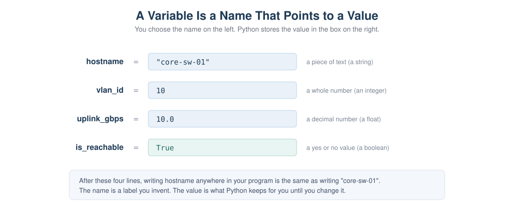
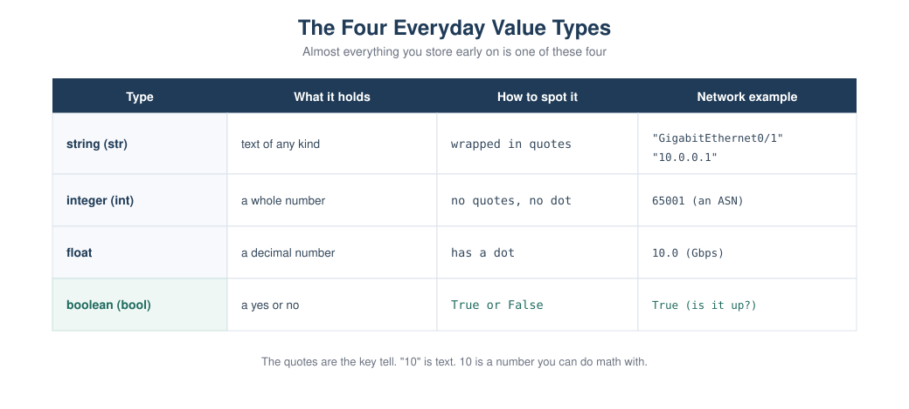

Chapter 2: Your First Python Programs¶
Part 1: Python Foundations for Network Engineers This is where you actually start writing Python. It assumes you have never programmed before. We begin with one line,
Learning objectives¶
After this chapter you will be able to:
- Show text on the screen with
print. - Write comments to leave notes in your code.
- Store a value in a variable and use it later.
- Tell apart the four everyday value types: strings, integers, floats, and booleans.
- Convert between text and numbers, and explain why that is necessary.
- Ask the user for input.
- Combine variables and text neatly with f-strings.
Why this matters to a network engineer¶
Everything you automate later is built from these small pieces. When a script connects to a router, the hostname it uses is stored in a variable. When it reads a port number from a file, that value arrives as text and has to be turned into a number before you can do math with it. When it prints a report, it uses f-strings to drop values into neat lines. None of this is advanced, but all of it shows up in every real tool. Get comfortable here and the rest of the course is much easier.
How to work through this chapter¶
Keep two things open: an IPython shell to try single lines, and VS Code to write
scripts you save and run. When you see a block like the one below, it is an IPython
session. In [1]: is what you type. Out[1]: is what Python shows back.
Type the examples yourself. Reading them is not the same as running them.
Showing text with print¶
The simplest useful thing a program can do is show something on the screen. In
Python that is the print instruction. Put what you want to show inside the
parentheses.
Notice there is no Out[] line here. print shows text as a side effect, it does
not hand a value back. You can print more than one line by calling print more than
once. Save this as a file called hello.py and run it:
Run it from your terminal (with your virtual environment active) using python
hello.py. You get:
That is a complete program. Two instructions, run top to bottom.
Comments¶
A comment is a note for humans that Python ignores. Anything after a # on a line is
a comment. Use comments to explain why something is there, not to repeat what the
code obviously does.
Best practice: Good comments explain intent. A comment like
# add 1 to xis noise. A comment like# skip the management interface, we never touch itearns its place.
Variables¶
Typing the same value over and over is a waste, and it makes changes painful. A variable lets you store a value under a name you choose, then use that name wherever you need the value. You create one with a single equals sign: the name on the left, the value on the right.
After that first line, writing hostname anywhere is the same as writing
"core-sw-01". If the device is renamed, you change one line instead of hunting
through the whole program.

Figure 2.1: A variable is a name you invent on the left and a value Python stores on the right. Later, using the name gives you back the value.
A few rules for names. Use lowercase letters and underscores, like vlan_id or
mgmt_ip. Names can contain letters, numbers, and underscores, but cannot start
with a number and cannot contain spaces. Pick names that say what the value is.
router_ip is better than x.
Best practice: A good variable name is a small gift to the next person who reads your code, which is often you, three months later.
bgp_neighborbeatsbn.
The four everyday value types¶
Early on, almost every value you store is one of four types. You do not declare the type, Python works it out from how you write the value.

Figure 2.2: Strings, integers, floats, and booleans, with how to recognize each and a network example of each.
A string is text. You write it inside quotes, single or double, it does not matter as long as they match. Device names, interface names, and yes, IP addresses, are all text.
An integer is a whole number, written with no quotes and no decimal point. VLAN IDs and AS numbers are integers.
A float is a number with a decimal point. Link speeds or utilization percentages are often floats.
A boolean is a yes or no value, written as True or False with a capital first
letter. It answers a question: is this interface up, is this device reachable.
You can ask Python what type a value is with type. This is handy when you are not
sure.
In [7]: type("core-sw-01")
Out[7]: <class 'str'>
In [8]: type(10)
Out[8]: <class 'int'>
In [9]: type(10.0)
Out[9]: <class 'float'>
In [10]: type(True)
Out[10]: <class 'bool'>
The quotes are the key tell. "10" is text. 10 is a number. They look almost the
same to you, but Python treats them very differently, as you are about to see.
Doing a little math¶
Numbers behave the way you expect. The usual symbols are +, -, * for multiply,
and / for divide.
Text does not add like numbers. Putting a + between two strings joins them end to
end, which is occasionally useful but often a trap.
Look at In [5] carefully. "24" and "2" are text, so + glued them into
"242", not 26. This is the single most common beginner surprise, and it matters a
lot in network work, because values that come from files, forms, and device output
almost always arrive as text.
Converting between types¶
To move between text and numbers you use conversion functions: int() makes a whole
number, float() makes a decimal, and str() makes text.
In [1]: int("22")
Out[1]: 22
In [2]: int("22") + 1
Out[2]: 23
In [3]: str(22)
Out[3]: '22'
In [4]: "port " + str(22)
Out[4]: 'port 22'
So the rule is simple. If a number arrived as text and you need to do math, convert
it with int() or float() first. If you have a number and you want to build a
message, convert it to text with str(), or better, use an f-string, which does the
conversion for you.
Warning:
int("Gig0/1")fails, because that text is not a number. Only convert text that really is a number. You will learn to handle failures safely in the error handling chapter.
Getting input from the user¶
Sometimes you want to ask the person running the script for a value. The input
instruction shows a prompt and hands back whatever they type, always as text.
Because input always returns text, a number typed by the user is text until you
convert it:
vlan_text = input("Enter the VLAN ID: ")
vlan_id = int(vlan_text) # turn the text into a real number
print(f"VLAN {vlan_id} will be created")
f-strings: putting values into text neatly¶
Joining text and values with + and str() gets clumsy fast. An f-string is the
clean way. Put the letter f right before the opening quote, then write your text
and drop any variable inside curly braces.
In [1]: hostname = "core-sw-01"
In [2]: vlan_count = 12
In [3]: f"{hostname} carries {vlan_count} VLANs"
Out[3]: 'core-sw-01 carries 12 VLANs'
Python replaces {hostname} with the value of hostname and {vlan_count} with its
value, converting numbers to text automatically. f-strings are how you will build
almost every message and report in this course.
Code walkthrough: a device summary¶
Here is a small program that pulls the chapter together. It stores the facts about
one device and prints a tidy summary. It uses only what you have learned: variables,
the four value types, and f-strings. This is scripts/chapter02/device_banner.py.
hostname = "core-sw-01"
mgmt_ip = "10.0.0.1"
vlan_count = 12
uplink_gbps = 10.0
is_reachable = True
print("Device summary")
print("==============")
print(f"Hostname : {hostname}")
print(f"Management IP: {mgmt_ip}")
print(f"VLAN count : {vlan_count}")
print(f"Uplink speed : {uplink_gbps} Gbps")
print(f"Reachable : {is_reachable}")
Why is it written this way? Each fact gets its own well named variable, so the program reads like a description of the device. The address is stored as text, because an IP address is not something you do math on, it is a label. The VLAN count is an integer and the uplink speed is a float, because those are numbers. The reachable flag is a boolean, because it answers a yes or no question. The printing uses f-strings so each value drops neatly into a labeled line. If you had ten devices you would not copy this ten times, you would use a loop, which is Chapter 4. One device at a time is the right size for now.
Run it and you get:
Device summary
==============
Hostname : core-sw-01
Management IP: 10.0.0.1
VLAN count : 12
Uplink speed : 10.0 Gbps
Reachable : True
Lab¶
Lab 2.1: Build a Device Banner is provided as a worksheet at
labs/chapter02/lab02_device_banner.md.
Objective. Write your first useful script from scratch, using variables, value types, and f-strings to print a clean summary for one device.
Network scenario. You want a quick, repeatable way to print a labeled summary of a device's key facts, the kind of thing you would later generate for every device in your network.
Topology. None. Everything runs on your computer.
Prerequisites. Chapter 0 finished, so Python and your virtual environment are ready.
Files required. None to start. You create device_banner.py.
Steps.
- In your project, create a file
scripts/chapter02/device_banner.py. - Create five variables for a device:
hostnameandmgmt_ipas text,vlan_countas an integer,uplink_gbpsas a float, andis_reachableas a boolean. - Print a two line header.
- Print each fact on its own line using an f-string, with aligned labels.
- Save and run it with
python scripts/chapter02/device_banner.py.
Complete script. See the walkthrough above, which is the full solution.
Expected output.
Device summary
==============
Hostname : core-sw-01
Management IP: 10.0.0.1
VLAN count : 12
Uplink speed : 10.0 Gbps
Reachable : True
Verification. Your output matches, and each value sits after its label. If a number came out with quotes around it, you stored it as text by mistake.
Common errors.
NameError: name 'hostname' is not defined. You used a variable before creating it, or misspelled the name. Names must match exactly.- The IP address shows as a number error. Keep the address in quotes. It is text.
- You forgot the
fbefore the quotes, so the line printed{hostname}literally instead of the value. Add thef.
Student exercise. Copy your script to make a banner for a second, different
device (a different hostname, address, VLAN count, speed, and a False reachable
flag). The solution is in solutions/chapter02/device_banner_edge_solution.py.
Challenge lab. Imagine the access and uplink port counts arrive as text, for
example "24" and "2". Write a short script that converts both to integers, adds
them, and prints the total number of ports. Then, in a comment, explain what "24" +
"2" would print instead and why. The solution is in
solutions/chapter02/challenge_port_count_solution.py.
Troubleshooting tip: If your total came out as
242, you added the values as text. Convert each withint()before adding.
Key takeaways¶
print shows text on the screen. A # starts a comment, a note Python ignores. A
variable stores a value under a name you choose, using a single =. The four
everyday types are strings (text in quotes), integers (whole numbers), floats
(decimals), and booleans (True or False). Text and numbers are not the same, so
"24" + "2" is "242", not 26. Use int(), float(), and str() to convert,
and remember that input always gives you text. f-strings are the clean way to put
values into text. Everything in this chapter is small, and everything later is built
from it.
Review questions¶
- What is the difference between
printand a comment? - Write the line that stores the text
Loopback0in a variable calledinterface. - What are the four everyday value types, and how do you recognize each one?
- What does
"22" + "1"produce, and what doesint("22") + 1produce? Why are they different? - Why does
inputalways return text, and what do you do about it when you need a number? - Rewrite
"Device " + hostname + " has " + str(vlan_count) + " vlans"as an f-string. - What error do you get if you use a variable you never created, and what usually causes it?
- Is
"10.0.0.1"a string or a number in Python, and why does that make sense?
Interview questions¶
- A value read from a CSV file is
"65001"and you need to use it as an AS number in a comparison. What do you do first? - Explain the difference between an integer, a float, and a string, with a network example of each.
- Why might storing an IP address as a string be the right choice rather than a number?
- What is an f-string, and why is it preferred over joining text with plus signs?
Interview tip: The text versus number distinction sounds trivial, but it is behind a large share of real automation bugs. Showing that you always think about what type a value is, especially data that came from a file or a device, signals care.
Repository files for this chapter¶
docs/chapters/chapter02_first_programs.md(this chapter)docs/diagrams/ch02_variables_boxes.svg(Figure 2.1)docs/diagrams/ch02_value_types.svg(Figure 2.2)scripts/chapter02/hello.py(first program)scripts/chapter02/device_banner.py(device summary)labs/chapter02/lab02_device_banner.md(lab worksheet)solutions/chapter02/device_banner_edge_solution.py(exercise solution)solutions/chapter02/challenge_port_count_solution.py(challenge solution)
What is next¶
Chapter 3 answers the question you may already be asking: what if I have not one device but fifty? That is where data structures come in. You will learn what a data structure is in plain terms, then meet the list and the dictionary, which let you hold many values and many labeled facts together. Those two are the backbone of every real network script.